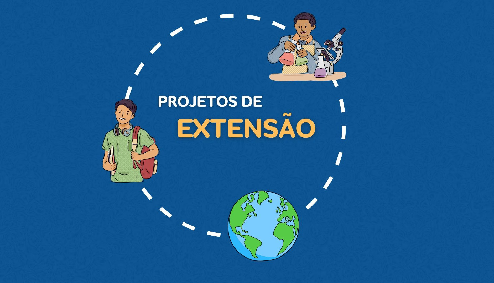

Transformando o Futuro com Educação
O Instituto Federal de São Paulo (IFSP) é referência em ensino técnico, tecnológico e superior, promovendo a inovação, a inclusão e o desenvolvimento sustentável.
Cursos de Qualidade
Conheça nossos cursos técnicos, superiores e de pós-graduação, projetados para atender às demandas do mercado.
Pesquisa e Inovação
Descubra como o IFSP promove a pesquisa científica e tecnológica, contribuindo para o avanço do conhecimento.

Extensão e Comunidade
Saiba mais sobre nossos projetos de extensão, que conectam o IFSP à sociedade e promovem o desenvolvimento social.